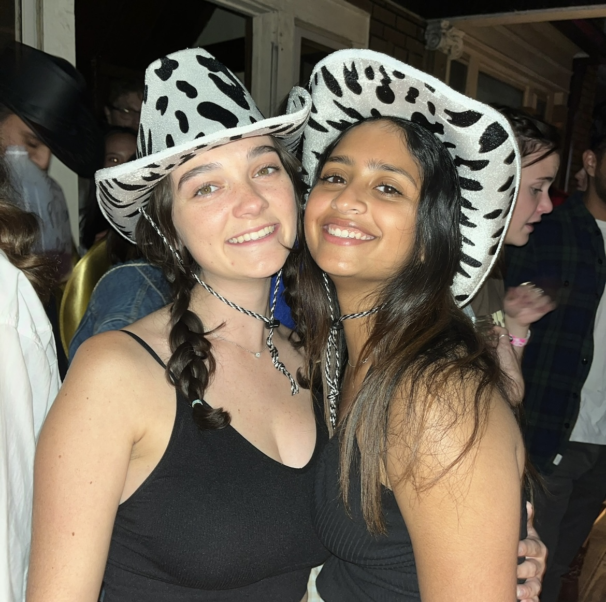

Hi everyone, we're Sreya and Casey!
We are seniors at the University of Michigan who both share a love for coffee. Over the past 4 years we have visited many coffee shops around Ann Arbor and have found some of our favorite places. We created this website to showcase some of our favorite coffee memories. We hope you enjoy!
Some of our favorite coffees over the past year